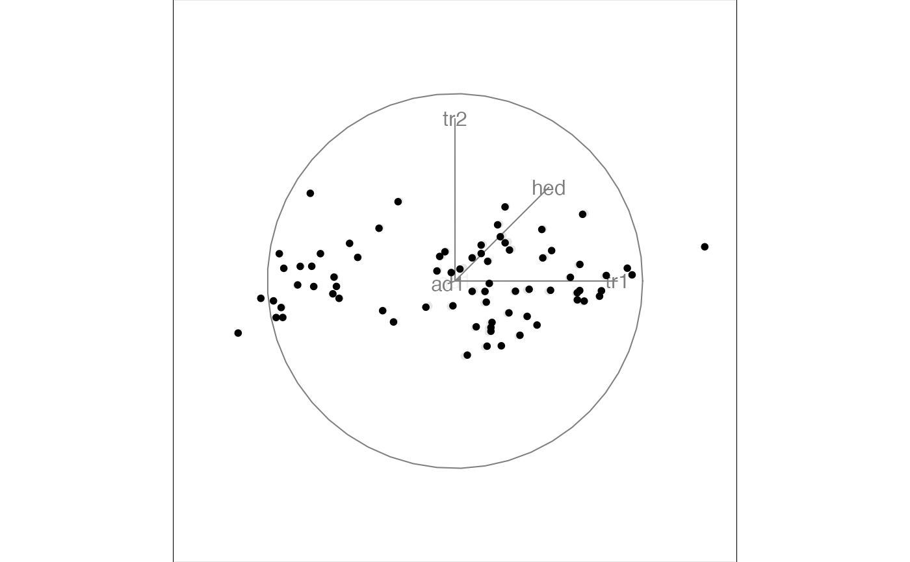
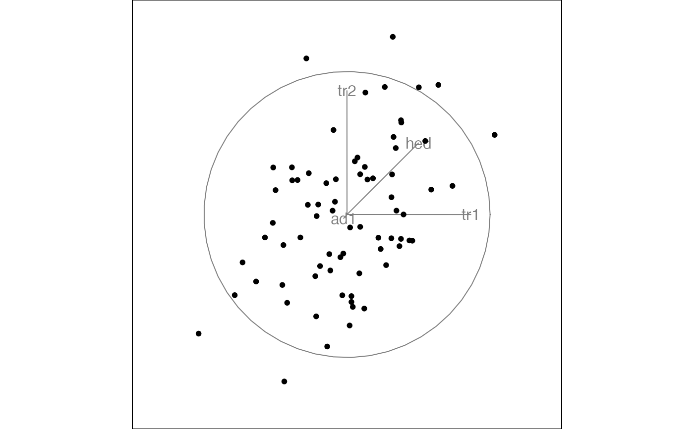
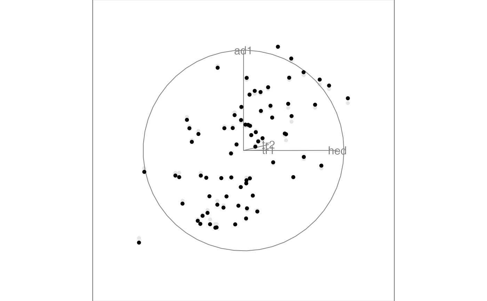
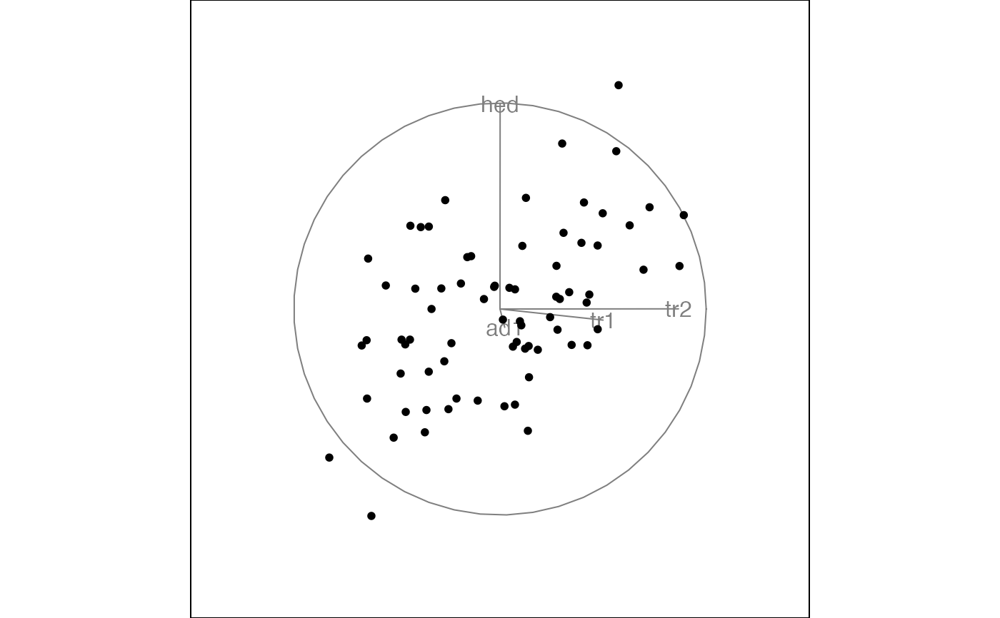
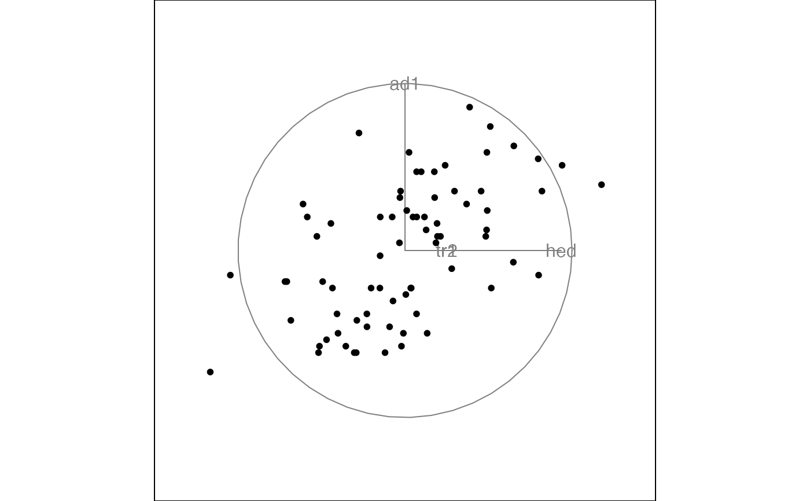
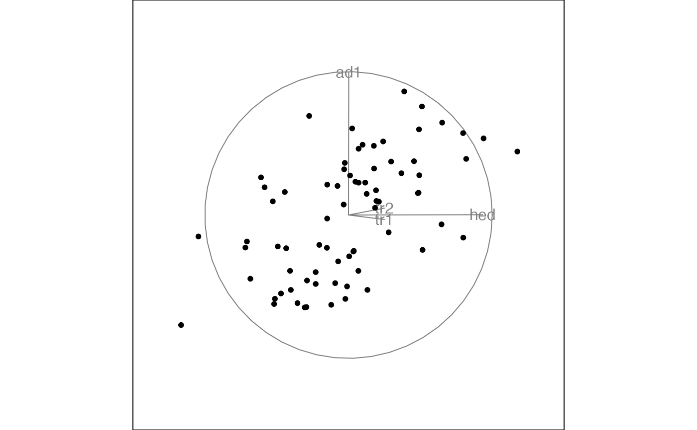
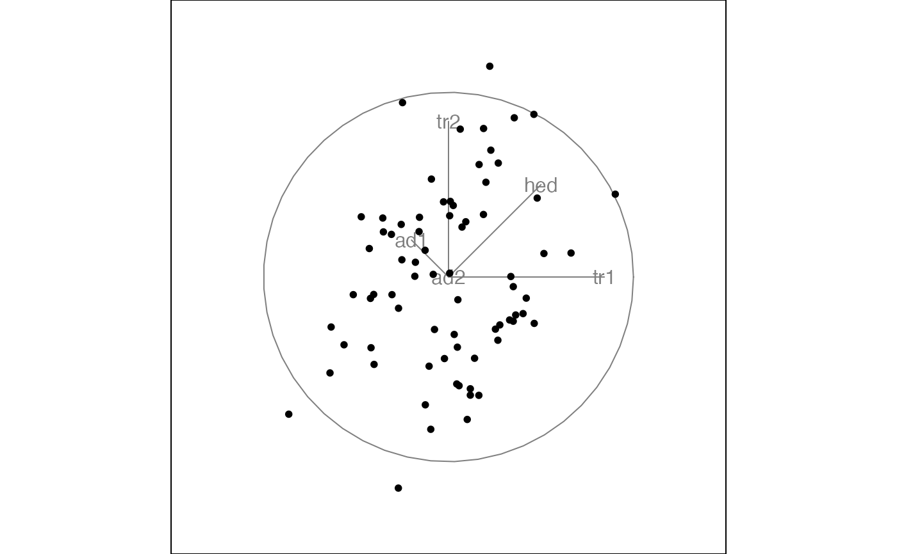
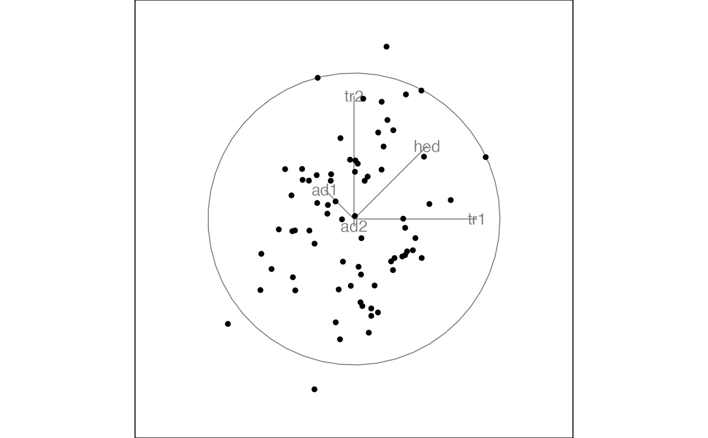

A frozen tour fixes some of the values of the orthonormal projection
matrix and allows the others to vary freely according to any of the
other tour methods. This frozen tour is a frozen grand tour. See
frozen_guided_tour for a frozen guided tour.
Arguments
- d
target dimensionality
- frozen
matrix of frozen variables, as described in
freeze
Details
Usually, you will not call this function directly, but will pass it to
a method that works with tour paths like animate,
save_history or render.
Examples
frozen <- matrix(NA, nrow = 4, ncol = 2)
frozen[3, ] <- .5
animate_xy(flea[, 1:4], frozen_tour(2, frozen))
#> Converting input data to the required matrix format.
#> Using half_range 3.7


frozen <- matrix(NA, nrow = 4, ncol = 2)
frozen[1, 1] <- 0.5
animate_xy(flea[, 1:4], frozen_tour(2, frozen))
#> Converting input data to the required matrix format.
#> Using half_range 3.7


# Doesn't work - a bug?
frozen <- matrix(NA, nrow = 4, ncol = 2)
frozen[1:2, 1] <- 1 / 4
animate_xy(flea[, 1:4], frozen_tour(2, frozen))
#> Converting input data to the required matrix format.
#> Using half_range 3.7


if (FALSE) { # \dontrun{
# This freezes one entire direction which causes a problem,
# and is caught by error handling.
# If you want to do this it would be best with a dependence
# tour, with one variable set one axis, eg 3rd variable to
# x axis would be indicated from the code below
frozen <- matrix(NA, nrow = 4, ncol = 2)
frozen[3, ] <- c(0, 1)
animate_xy(flea[, 1:4], frozen_tour(2, frozen))
} # }
# Two frozen variables in five.
frozen <- matrix(NA, nrow = 5, ncol = 2)
frozen[3, ] <- .5
frozen[4, ] <- c(-.2, .2)
animate_xy(flea[, 1:5], frozen_tour(2, frozen))
#> Converting input data to the required matrix format.
#> Using half_range 4.3

